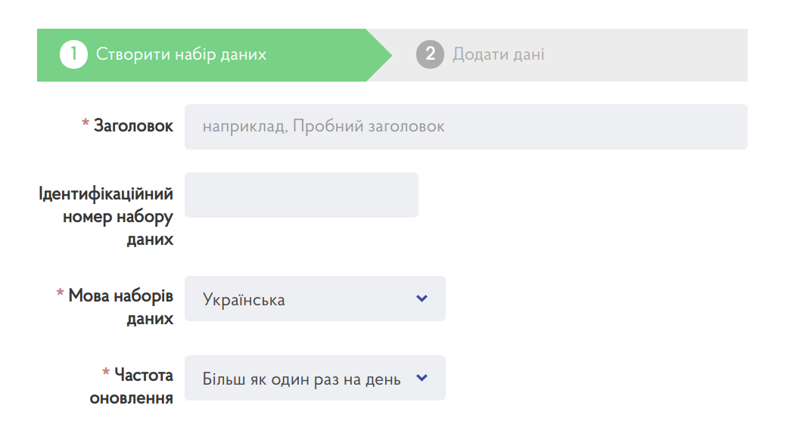

| Критерій | Характеристика |
| Нормативно-правові акти, які визначають створення, збір, зберігання, використання й поширення даних | Закон України “Про доступ до публічної інформації”, Постанова КМУ “Про затвердження Положення про набори даних, які підлягають оприлюдненню у формі відкритих даних” від 21.10.2015 р. № 835, нормативно-правові акти розпорядників на виконання Постанови КМУ від 21.10.2015 р. № 835 |
| Розпорядники даних | Всі розпорядники публічної інформації |
| Інформація, що створюється, збирається, зберігається й поширюється | Мінімальні вимоги до змісту реєстру визначені у пункті 19 Положення, затвердженого Постановою КМУ від 21.10.2015 р. № 835. Реєстр щонайменше має містити ідентифікатор, назву, формат оприлюднення та посилання на сторінку набору. |
| Спосіб оновлення | Інформація змінюється внаслідок включення, виключення наборів даних з реєстру або зміни їх метаданих |
| Частота оновлення інформації | Позапланово (протягом трьох робочих днів з моменту внесення змін) |
| Тип даних | Структурований |
| Формат даних | XLSX, ODS, CSV, XML, JSON, RDFa або будь-який інший відкритий машиночитаний формат |
Реєстр наборів даних формується на основі Переліку наборів даних, які підлягають оприлюдненню у формі відкритих даних, Системи обліку публічної інформації, аудиту даних. Відповідно до пункту 19 Положення, затвердженого Постановою КМУ від 21.10.2015 р. № 835 (далі — Положення), Реєстр оприлюднених наборів даних повинен містити щонайменше такі відомості:
За необхідності до реєстру можна включати й інші метадані, що визначені у пункті 7 Положення. Реєстр оприлюднюється у відкритих машиночитаних форматах (пункт 19 Положення).
| Шаблон таблиці | Register.xlsx |
| Приклад таблиці | Example.xlsx |
| Структура (XLSX, CSV, JSON) | Structure.xlsx, Structure.csv, Structure.json |
Головне завдання реєстру — це облік наборів задля дотримання розпорядниками принципів оприлюднення відкритих даних. Окрім чотирьох обов’язкових елементів (ідентифікаційний номер, найменування, формати, гіперпосилання на сторінку набору даних), до реєстру рекомендовано включити інші метадані, які дозволяють краще контролювати якість наборів. Розпорядники можуть змінювати та розширювати структуру реєстру на основі W3C Data Catalog Vocabulary.
Набір включає один ресурс — таблицю Register. Для її підготовки та ведення необхідно використовувати електронні таблиці Microsoft Excel, LibreOffice Calc або Google Таблиці. Структура реєстру наведена в таблиці 2. Кожним записом до реєстру є окремий набір даних.
Оприлюднювати набір необхідно у форматах структурованих даних — XLSX, ODS, CSV. На портал достатньо завантажити XLSX або ODS книгу. CSV версія таблиці сформується автоматично. Оновлювати набір необхідно в разі зміни даних у реєстрі. Для цього потрібно перезавантажити файл ресурсу.
Під час оприлюднення реєстру найбільші труднощі спіткають відповідальних осіб з визначенням ідентифікаційних номерів наборів. Ідентифікатори наборів даних у реєстрі співпадали з ідентифікаторами на порталі відкритих даних. На data.gov.ua ідентифікаційний номер набору присвоюється на етапі заповнення паспорта (див. рисунок 1). Він використовується у адресі набору (URL):
https://data.gov.ua/dataset/[ідентифікаціний номер набору даних]
Якщо відповідальна особа залишить поле вільним, портал згенерує довільну унікальну комбінацію літер та символів (UUID), наприклад, 550e8400-e29b-41d4-a716-446655440000.
Рисунок 1 — Форма для заповнення даних паспорта набору

Розпорядники можуть власноруч присвоювати наборам зручні ідентифікатори. Для їх створення потрібно використовувати лише малі латинські літери, цифри та дефіси. Наприклад, розглянемо ідентифікатори декількох наборів Антимонопольного комітету України (таблиця 1).
Таблиця 1 — Приклади ідентифікаторів наборів
| Назва набору | Ідентифікатор
набору |
Адреса набору на порталі (URL) |
| Довідник підприємств, установ (закладів) та організацій Антимонопольного комітету України | amk-dovidnyk | https://data.gov.ua/dataset/amk-dovidnyk |
| Інформація про організаційну структуру Антимонопольного комітету України | amk-struktura | https://data.gov.ua/dataset/amk-struktura |
| Звіти, в тому числі щодо задоволення запитів на інформацію Антимонопольного комітету України | amk-zvity | https://data.gov.ua/dataset/amk-zvity |
Як показано у прикладі, використання ідентифікаторів допомагає зробити адреси наборів змістовними та зручними для запам’ятовування. Не рекомендується використовувати довгі ідентифікатори, наприклад, informatsiia-pro-orhanizatsiinu-strukturu-antymonopolnoho-komitetu-ukrainy або поширені комбінації літер та чисел, що не мають відношення до ідентифікації наборів, наприклад, 777, qwerty, 1234567890.
Таблиця 2 — Структура таблиці Register
| Назва колонки (name) | Заголовок колонки (title) | Опис значень (description) | Тип даних (datatype) | Вимога заповнення (required) |
| identifier | Ідентифікатор | Ідентифікаційний номер набору даних. Наприклад: amk-dovidnyk. Якщо розпорядник не присвоїв ідентифікаторів перед завантаженням, їх можна скопіювати з паспортів наборів на порталі. | Текст (string) | Істина (true) |
| title | Назва | Назва набору даних. Наприклад: Інформація про організаційну структуру Антимонопольного комітету України. | Текст (string) | Істина (true) |
| description | Опис | Опис набору даних. Наприклад: Набір містить інформацію про організаційну структуру розпорядника відповідно до організаційно-розпорядчого документа “Структура і штатна чисельність”. | Текст (string) | Істина (true) |
| accrualPeriodicity | Частота оновлення | Частота оновлення може мати одне зі значень: Більш як один раз на день, Щодня, Щотижня, Щомісяця, Щокварталу, Кожного півріччя, Щороку, Відразу після внесення змін. Наприклад: Щотижня. | Текст (string) | Істина (true) |
| keyword | Ключові слова | Ключові слова, що описують зміст даних в наборі. Слова необхідно відділити знаком кома. Наприклад: структура, посади, підрозділи, штат, підрозділ, організаційна структура. | Текст (string) | Істина (true) |
| purpose | Підстава та призначення збору інформації | Перелік нормативно-правових актів, що визначають підставу та призначення збору інформації. Назви мають включати основні реквізити, що необхідні для пошуку документів. | Текст (string) | Істина (true) |
| landingPage | Посилання на сторінку набору даних | Посилання на сторінку набору на порталі відкритих даних. Посилання має починатися з https://. Наприклад: https://data.gov.ua/dataset/amk-zvity. | Посилання (anyURI) | Істина (true) |
| distributionFormat | Формати ресурсів | Перелік форматів, у яких доступні ресурси набору. Назви форматів записуються великими латинськими літерами. У випадку кількох форматів відділити значення комами. | Текст (string) | Істина (true) |
| publisherName | Назва розпорядника | Повна назва розпорядника набору даних. Наприклад: Міністерство охорони здоров’я України. | Текст (string) | Істина (true) |
| publisherIdentifier | Ідентифікатор розпорядника | Якщо розпорядник є юридичною особою, вказати його код ЄДРПОУ. Наприклад: 01234567. У іншому випадку зазначити null. | Текст (string) | Хибність (false) |
| contactPointFn | Відповідальна особа | Прізвище, ім’я, по батькові відповідальної особи. Наприклад: Симоненко Олена Петрівна. | Текст (string) | Істина (true) |
| contactPointHasEmail | Email відповідальної особи | Адреса електронної пошти відповідально особи. Наприклад: contact@example.gov.ua. | Текст (string) | Істина (true) |
Назва набору має відповідати Постанові КМУ № 835 (зі змінами) та включати назву розпорядника, наприклад, “Реєстр наборів даних, що перебувають у володінні Державної судової адміністрації України”. Приклади заповнення паспортів наборів та ресурсів наведені у таблицях 3 — 4.
Таблиця 3 — Приклад паспорта набору даних на data.gov.ua
| Назва поля | Приклад заповнення |
| Назва набору | Реєстр наборів даних, що перебувають у володінні Державної судової адміністрації України |
| Відомості про мову інформації, яка міститься у наборі | Українська |
| Частота оновлення | Щороку |
| Опис | Набір містить Реєстр наборів даних, що перебувають у володінні Державної судової адміністрації України. Для кожного набору вказаний ідентифікаційний номер, назва, формати ресурсів, гіперпосилання на сторінку набору й інші метадані. |
| Підстава та призначення збору інформації | Закон України “Про доступ до публічної інформації”, Постанова КМУ “Про затвердження Положення про набори даних, які підлягають оприлюдненню у формі відкритих даних” від 21.10.2015 р. № 835 |
| Ключові слова | дані, набір, набори, датасети, реєстр, розпорядник, метадані, паспорт, відкриті дані |
| Відповідальна особа | Симоненко Олена Петрівна |
| Адреса електронної пошти відповідальної особи | o.symonenko@example.gov.ua |
Назва ресурсу має відповідати назви таблиці — Register.
Таблиця 4 — Приклад паспорта ресурсу Register
| Назва поля | Приклад заповнення |
| Назва ресурсу | Register |
| Опис | Таблиця містить ідентифікатори, назви, описи, частоту оновлення, ключові слова, підставу та призначення збору інформації, посилання на сторінку набору даних, формати ресурсів, прізвище, ім’я, по батькові й адресу електронної пошти відповідальної особи. Кожним записом до реєстру є окремий набір даних. |
| Формат | CSV |